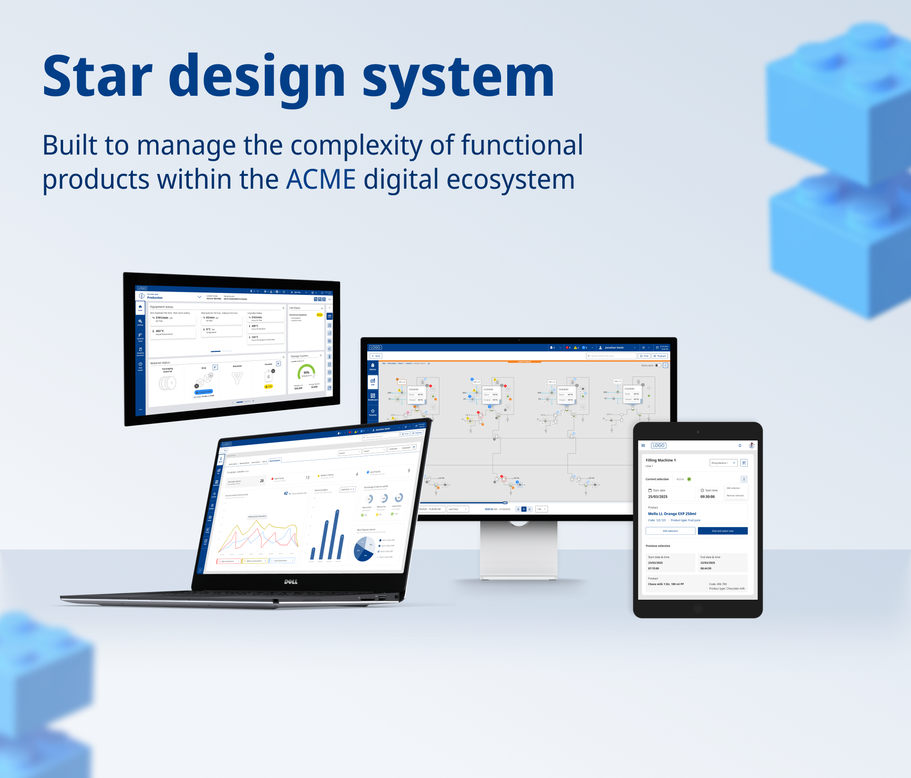
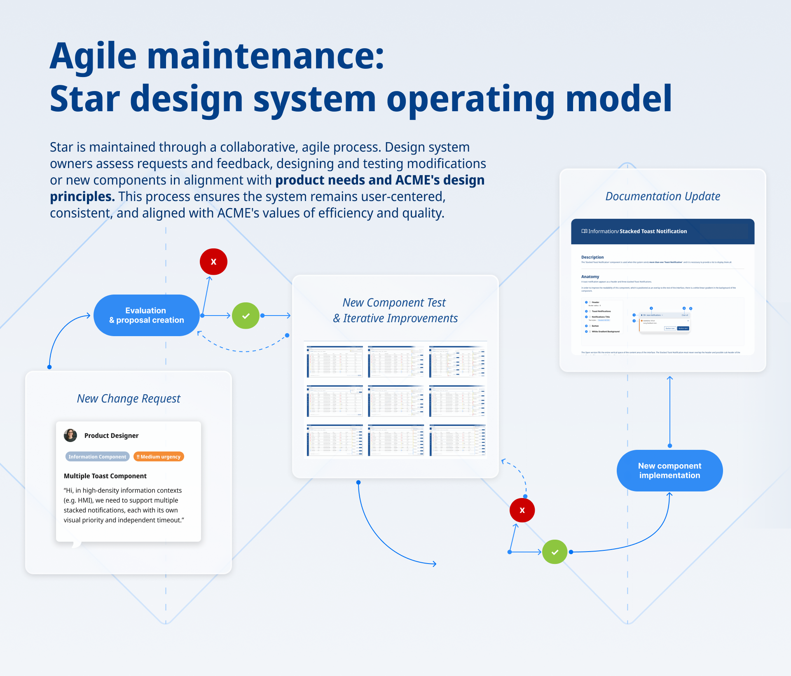
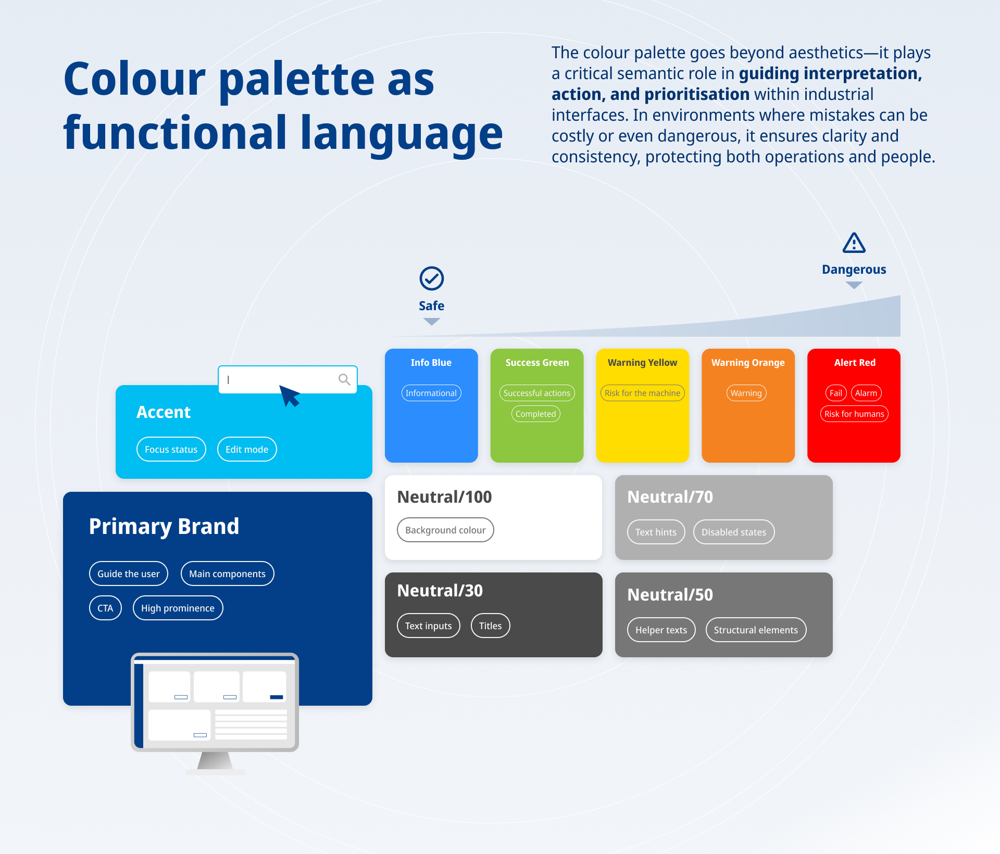
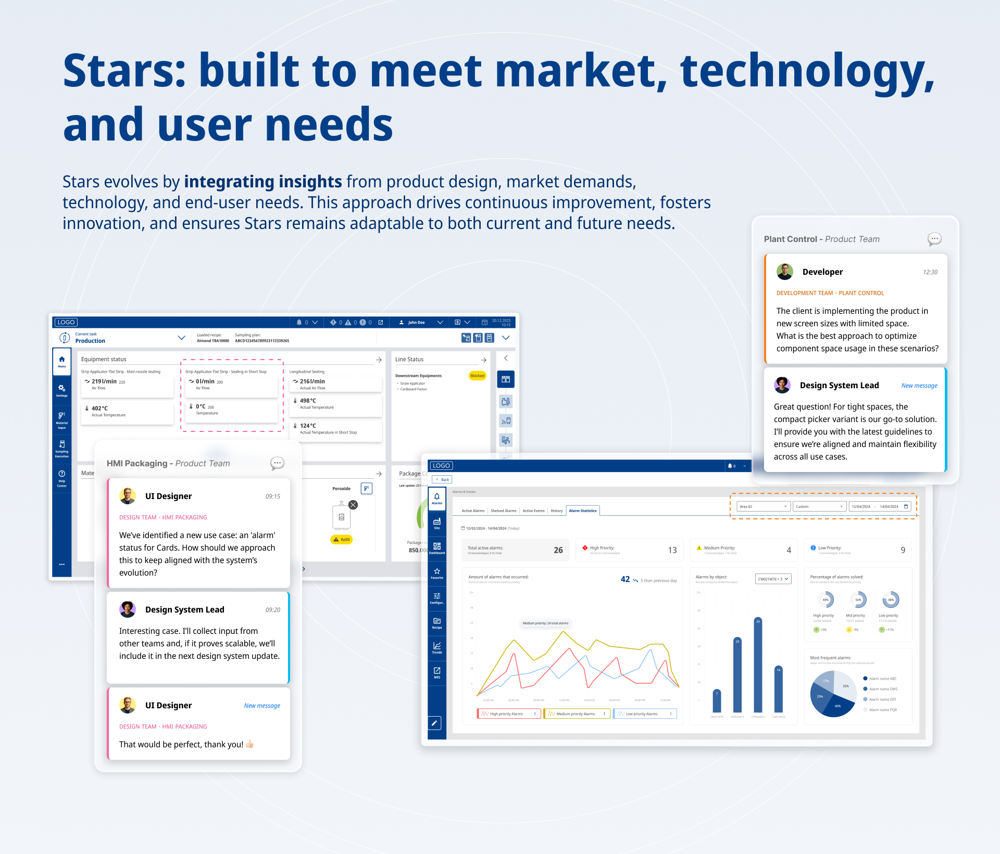
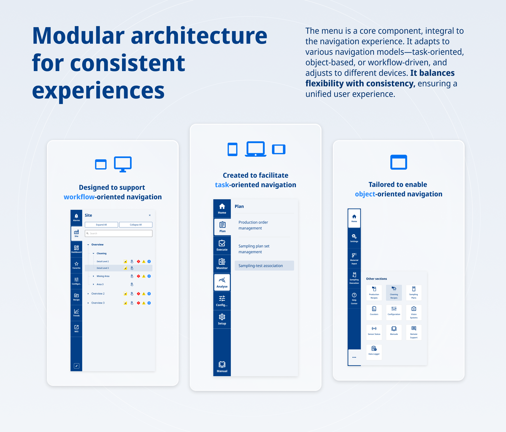
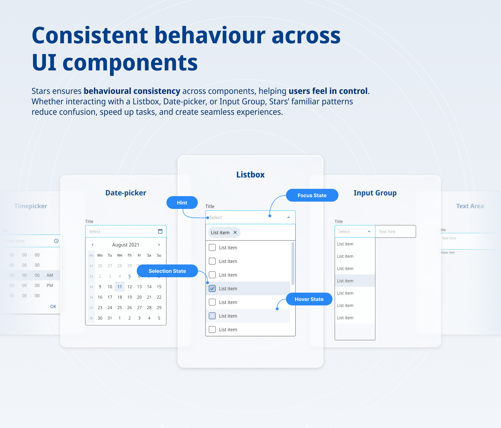
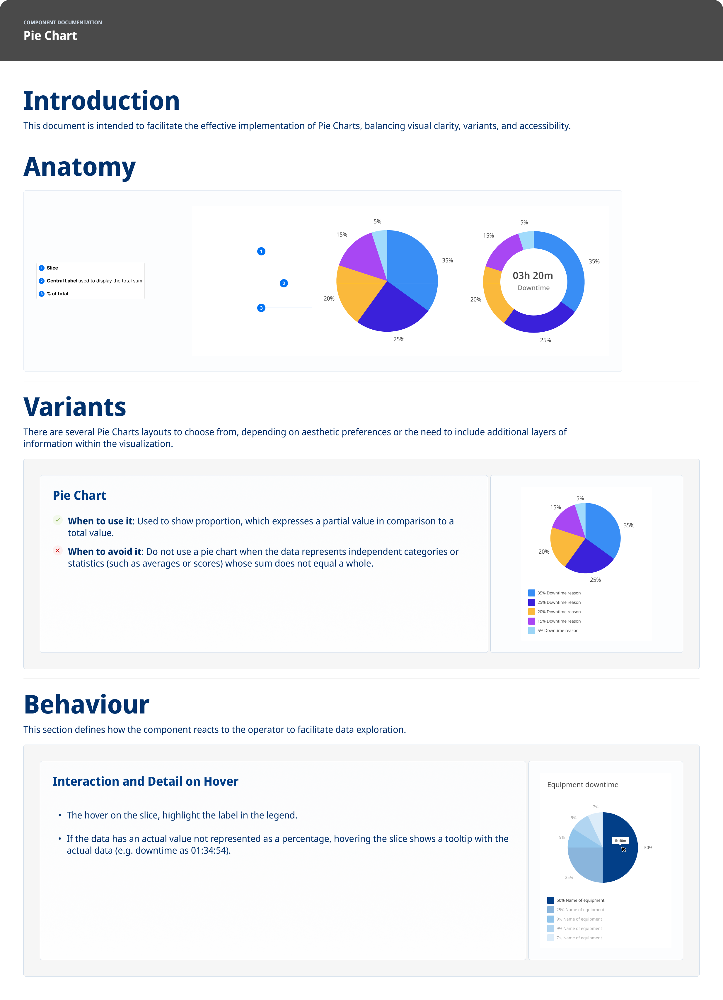
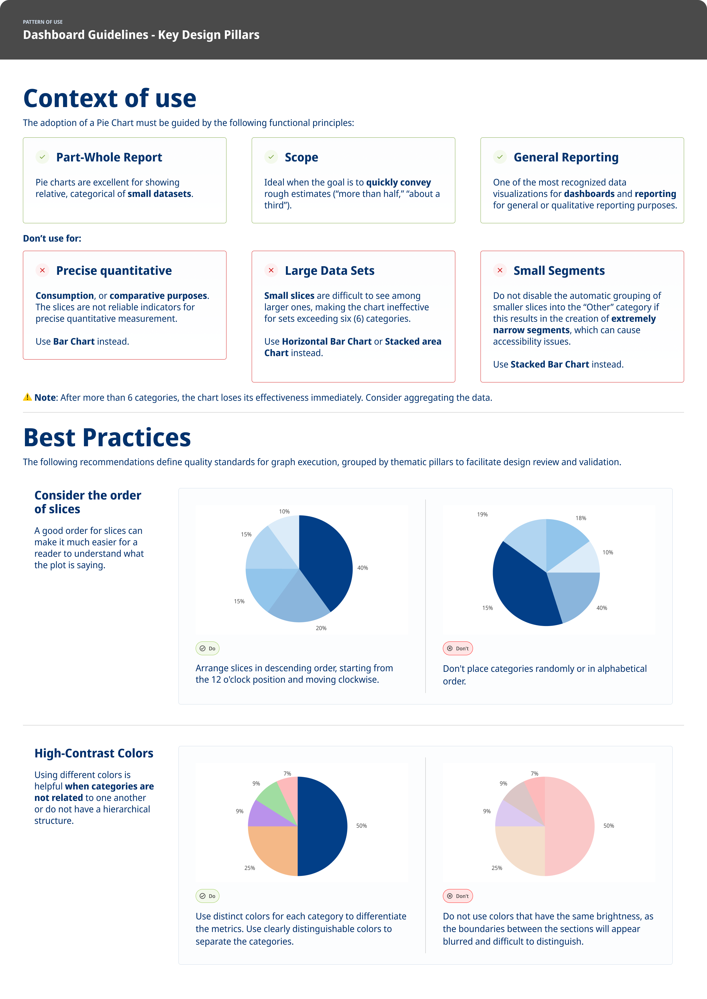

The system's cover overview, across desktop, laptop, and tablet.
1 / 6
Designing to last
A mature design system, widely adopted and quietly stalling — inherited from someone the client had trusted for years.
This is the case that answers what happens after a system ships. I didn't build this one — I took it over mature, adopted, and stalling, and spent my time on the part that keeps a product alive: adoption, arbitration between teams, and documentation people actually open.






The system's cover overview, across desktop, laptop, and tablet.
A foundation library, a core component library of around 56 components, an icon system — solid, and already in use across the group's products. The library was not the problem.
The friction was at the seams. Each product team applied the system its own way, so wherever two products had to feel like the same company, they didn't. Change requests pulled in incompatible directions, because every one of them was right from inside its own product, and nobody was arbitrating between them. A shared standard that stops being shared drifts into a component warehouse.
There was a second problem, and it was mine. I came into a project that had been running since 2022, replacing — with no notice — the person the client had trusted throughout it. Inherited trust doesn't transfer.
I changed the model. The relationship had been organised around handing over components; I turned it into a standing conversation with the product teams, and moved the documentation up a level — from components to patterns, starting with dashboards. Component documentation answers how does this control work. Pattern documentation answers how do I build the screen I've been asked for, which is the question teams actually arrive with.
That second move solved a problem I hadn't been briefed on. Three years in, a mature system stops generating change requests: the base components exist, they work, and the work looks finished — which reads, from the client's side, like a project that no longer needs a partner. Shifting the centre of gravity onto patterns put the system back into the teams' daily work, and put us in front of stakeholders inside the company we'd never worked with.


Running since 2022, the system was in its fourth year when I took it over, and change requests had fallen 70%: the base library was doing its job, so the requests dried up — which from the client's side looks like a project that's finished. The pattern work gave them something a completed library no longer could, and the renewal argument moved from maintenance to the surfaces their teams were actively building.
The design system team had been talking to a single person on the client side; it now runs weekly with five, across three product teams, and pulls in stakeholders from other teams when a decision needs them. Three teams that had never used the system have joined it.
It's become one of the most formative paths inside the firm, because a mature system is where you learn that the hard part was never the components.
When two products wanted opposite things, the fast move is to decide centrally and publish. I ran it as an open negotiation instead, with both teams in the room, and led the hardest of them: cross-product alignment on sizing and typography, where every product had a legitimate reason to be the exception.
Some change requests took measurably longer to close — that's the real cost, and I'd pay it again: adoption went up, three teams that weren't using the system joined it, and money the client had already spent started returning something.
Documentation existed and was thorough, and it was barely being read. Talking to stakeholders across the teams, the reason turned out to have nothing to do with the content: it lived in Figma, and the people who needed it didn't work there. We migrated all of it to Confluence, where the teams already documented, and moved specs into Figma's handoff tools, where the developers already were.
A full migration on a live system, and documentation now maintained where design isn't — the cost of putting it where it gets used instead of where it's convenient to write.
Brand, mode and product variation resolve once, at the foundation, instead of being duplicated component by component.
A migration on a library already in production, with every team brought along — and nobody thanks you for work whose only visible result is duplication that never happens.
Change requests drying up looks like success from the inside. I only recognised it as a warning once adoption had already gone quiet in places, and I'd treat request volume as a health metric from day one rather than a workload one.
I'd also handle the handover itself differently. Coming into a project already three years old, I'd put the system's own roadmap on the table in the first weeks: the phases already completed, where the system stood, and what the next ones were. It would have made the value of the work visible before I had to demonstrate it, and it would have surfaced the continuity risk in my first month rather than most of a year in.
Component library built by the team before and during my tenure.